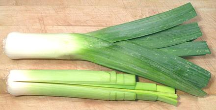
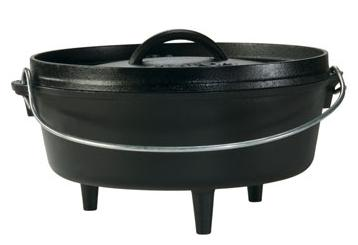

A leek as purchased, and a leek
prepared to be washed and sliced.

Lodge
Camp Dutch Oven / Bastable Oven
Note the ridge around the lid for holding hot coals and
the feet for standing it in hot coals - perfect for the Irish
farmhouse cooking environment.
Photo borrowed from
Lodge Manufacturing.